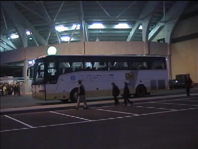

|
Roda JC - De Graafschap 3 - 1 |

De spelersbus van De Graafschap voor het PLS.
Roger toont het originele Kingz-shirt.
Bij Roda speelt Vicelich echter met nummer 16.
Slechts 20 Achterhoekers volgden hun club.
Een "alien" op west.
Soetaers wordt neergelegd. Dick Jol geeft geen strafschop.
Toen Soetaers even later buiten het strafschopgebied werd
neergelegd gaf Dick Jol aanvankelijk voordeel, maar toen
dat niks opleverde, alsnog een penalty. Hier staat Anastasiou
al klaar.
Hij schiet de bal onberispelijk in de linkerhoek.

Sonko, Vicelich en Torma lopen zich warm.
Nadat Zafarin (de maker van het tweede doelpunt) eerder
gewisseld werd voor Torma, werd Vicelich in de 80e minuut
ingebracht voor Nygaard.
Klik hier voor de laatste 10 foto's
©KPD